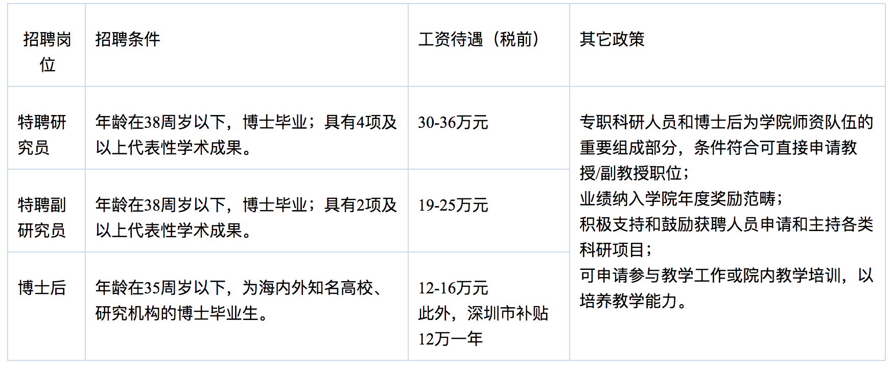

现任中山大学医学院教授，博士生导师。2005年于西北农林科技大学获得遗传学硕士学位（本硕连读，导师陈宏教授）。2008年于中科院昆明动物研究所获得博士学位（导师王文研究员）。2012年赴约翰霍普金斯大学医学院表观遗传研究中心从事人类复杂疾病及肿瘤的表观遗传学分子机制的研究。2017年8月获聘中山大学“百人计划”引进人才。
李昕博士自2005年起一直从事基因组与表观基因组的研究，利用生物信息学和实验生物学的手段回答重要的生物学问题。在对肿瘤发生和转移过程中，以及生物进化过程中的表观遗传学机制研究中均取得了突破性的成果。目前以第一作者及共同第一作者身份发表多篇论文在《Nature Genetics》，《Nature Biotechnology》，《Genome Research》，《The American Journal of Human Genetics》，《Trends in Genetics》，《BMC Genomics》等国际著名杂志上。同时还与他人合作发表SCI论文13篇。过去五年中，所有发表论文总引用数已超过1300次。
助理研究员，2008-2012
博士后，助理研究员，2012-2017
教授，2017-至今
遗传学，本硕连读，1999-2005
进化基因组，博士，2005-2008
肿瘤细胞的转移是癌症患者致死的重要因素之一，了解肿瘤细胞转移的分子生物学机制对癌症的治疗有着重要的临床指导意义。
DNA羟甲基化不仅是DNA主动去甲基化通路（active demethylation pathway）中重要的中间产物，其自身作为重要的表观遗传修饰也具有重要基因表达调控的作用。
理解人群中的DNA甲基化连锁规律是理解全基因组关联分析（GWAS）以及表观基因组关联分析的基础（EWAS）的重要基础。
欢迎具有生物信息学、生物化学和分子生物学、基础医学等相关背景且热爱科学研究的同学报考硕士和博士研究生。有意者请发详细个人简历到本人邮箱提前联系。
我们将提供最好的科研实验条件，瞄准国际前沿的研究课题，系统全面训练研究生的综合科研能力。鼓励研究生参加国内外的学术会议以提高专业素质，以使每一位研究生有机会作出第一流的研究工作，努力为你们未来职业发展提供最好的平台。
研究生招生信息详见中山大学研究生招生网

备注1：代表性学术成果主要为Thomson Reuters JCR-SCI 一区期刊论文，或中科院JCR-SCI 分区表二区期刊以上的论文。如主持国家级科研项目，或取得特别突出的学术成果（以第一作者或通讯作者在国际一流学术刊物或本学科公认最好的学术刊物上发表论文），代表性学术成果项数可放宽。
备注2: 专职科研人员无明确教学任务可申请各类科研项目，优秀者在聘期结束后或聘期内可直接申报学校的教授/副教授位置。 学校为录用并入职者报销参加面试的差旅费。
“博士后国际交流计划”派出项目：国家资助派出人员第一年每人30万人民币，第二年的资助经费由国外（境外）接收机构或合作导师承担。
“博士后国际交流计划”引进项目：资助标准为30万元人民币/人/年，其中国家资助20万元人民币/人/年，引进单位资助10万元人民币/人/年。
博士后创新人才计划：资助每人每年30万元，两年60万元，其中20万元为博士后科学基金。
香江学者计划：港方支付30万港币，国家资助30万元人民币。
广东省“珠江人才计划”海外青年人才引进计划：资助标准为每人两年60万元人民币。出站后连续在粤工作三年以上的博士后，给予每人40万元一次性安家补助。
有意者请将详细简历（包括学历、研究方向、发表文章等）通过电子邮件发至：lixin4306ren@gmail.com，请注明申请的职位。
本招聘启事长期有效，欢迎对生物医学研究有热情的青年才俊加盟！